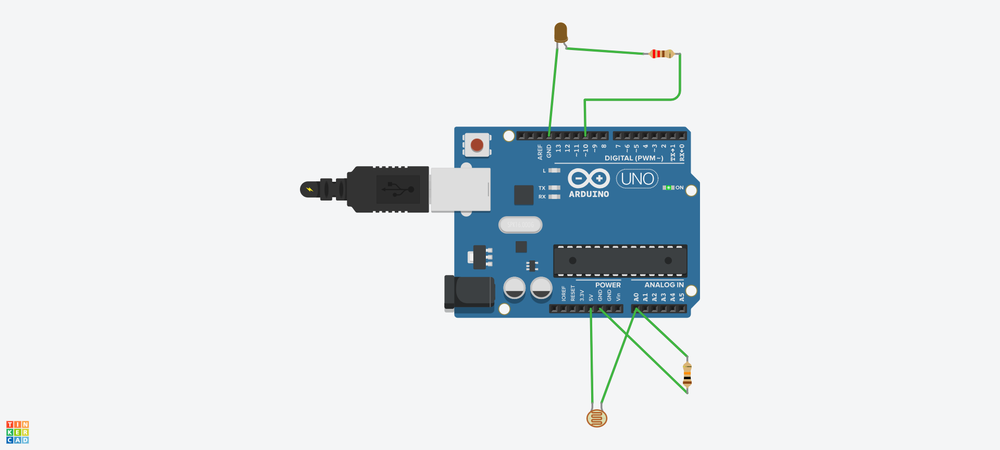
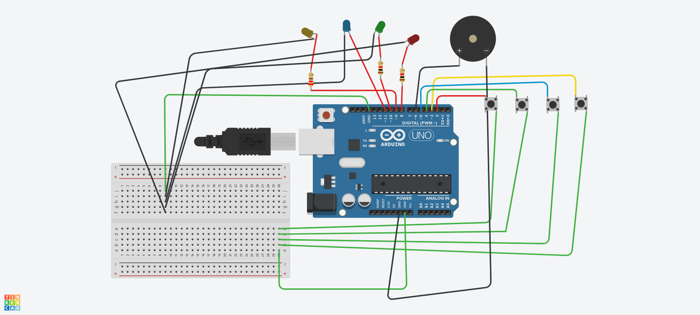

1
Potentiometer LED Dimmer
Manual control. Rotate a knob and control LED brightness using analog input and PWM.
analogRead()map()PWMToday we move beyond Day 0 basics. You will read inputs, control brightness, make decisions using conditions, print debugging data, and build a small memory-lock game in Tinkercad.
These are the exact ideas used in the three circuits. Read this first before building.
Every Arduino program has two important functions:
void setup() {
// Runs once when Arduino starts
}
void loop() {
// Runs again and again forever
}setup() is used for pin setup and Serial Monitor setup. loop() contains the main repeated logic of the project.
The Serial Monitor is your debugging window. It helps you see sensor values, button states, PWM values, and game results.
Serial.begin(9600);
Serial.println("Program Started");
Serial.print("Sensor value: ");
Serial.println(sensorValue);Serial.begin().| Type | Meaning | Day 1 Example |
|---|---|---|
const int | A fixed integer value that should not change | const int ledPin = 9; |
int | Whole number | Potentiometer value, LDR value, PWM value |
bool | true or false | Button state, game correct/wrong status |
unsigned long | Large positive number, useful for time | Used with millis() in advanced timing |
array | A list of values under one name | LED pins, button pins, secret game pattern |
Variables store values. In our projects, they store pin numbers, sensor readings, brightness, level, and pattern.
int lightValue = 0; const int ledPin = 9;
Conditions allow Arduino to make decisions.
if (lightValue < 500) {
digitalWrite(ledPin, HIGH);
} else {
digitalWrite(ledPin, LOW);
}Loops reduce repeated code. They are useful for blinking, reading multiple buttons, and showing patterns.
for (int i = 0; i < 4; i++) {
digitalWrite(ledPins[i], HIGH);
}| Concept | Simple Meaning | Arduino Function | Used In |
|---|---|---|---|
| Digital Output | ON/OFF control | digitalWrite() | LED, buzzer |
| Digital Input | Read ON/OFF state | digitalRead() | Buttons in memory game |
| Analog Input | Read a changing voltage value | analogRead() | Potentiometer and LDR |
| PWM | Fast ON/OFF signal that controls brightness | analogWrite() | LED dimmer and smooth night lamp |
| INPUT_PULLUP | Uses Arduino internal pull-up resistor | pinMode(pin, INPUT_PULLUP) | Game buttons |
Use Tinkercad to safely build, test, and debug before physical hardware.
These are selected to build Day 1 skills in a clean learning progression.
Manual control. Rotate a knob and control LED brightness using analog input and PWM.
analogRead()map()PWMAutomatic control. Detect darkness and turn the lamp ON using sensor threshold logic.
LDRif/elsethresholdInteractive system. Repeat a secret LED pattern using buttons. Wrong input triggers alarm.
arraysbuttonsgame logicManual analog input controls output brightness.
Control LED brightness by rotating a potentiometer. This is the easiest way to understand analog input and PWM output.

Potentiometer LED Dimmer circuit screenshot from Tinkercad.
| Component | Quantity |
|---|---|
| Arduino UNO R3 | 1 |
| Potentiometer | 1 |
| LED | 1 |
| 220Ω resistor | 1 |
| Breadboard | 1 |
| Jumper wires | Few |
| Part | Connect To | Purpose |
|---|---|---|
| Pot left pin | 5V | Power side |
| Pot middle pin | A0 | Analog signal |
| Pot right pin | GND | Ground side |
| LED long leg | D11 through 220Ω | PWM brightness |
| LED short leg | GND | Return path |
/*
Day 1 Project 1: Potentiometer LED Dimmer
Board: Arduino UNO
Platform: Tinkercad Circuits
Concept:
- Read analog value from potentiometer
- Convert it to PWM value
- Control LED brightness
- Print values on Serial Monitor
*/
const int potentiometerPin = A0;
const int ledPin = 11; // PWM pin on Arduino UNO
int potentiometerValue = 0;
int ledBrightness = 0;
unsigned long lastPrintTime = 0;
const unsigned long printInterval = 300;
void setup() {
pinMode(ledPin, OUTPUT);
Serial.begin(9600);
Serial.println("Potentiometer LED Dimmer Started");
Serial.println("--------------------------------");
}
void loop() {
// Read analog value from potentiometer: 0 to 1023
potentiometerValue = analogRead(potentiometerPin);
// Convert 0-1023 range to 0-255 PWM range
ledBrightness = map(potentiometerValue, 0, 1023, 0, 255);
// Control LED brightness
analogWrite(ledPin, ledBrightness);
// Print values every 300 ms without slowing the main logic too much
if (millis() - lastPrintTime >= printInterval) {
lastPrintTime = millis();
Serial.print("Potentiometer Value: ");
Serial.print(potentiometerValue);
Serial.print(" | LED Brightness: ");
Serial.println(ledBrightness);
}
}Potentiometer LED Dimmer Started -------------------------------- Potentiometer Value: 0 | LED Brightness: 0 Potentiometer Value: 526 | LED Brightness: 131 Potentiometer Value: 1023 | LED Brightness: 255
Automatic lighting based on environmental brightness.
Use a photoresistor/LDR to detect light level. When the environment is dark, the LED turns ON automatically.

Smart Night Lamp with LDR circuit screenshot from Tinkercad.
| Component | Quantity |
|---|---|
| Arduino UNO R3 | 1 |
| Photoresistor / LDR | 1 |
| 10kΩ resistor | 1 |
| LED | 1 |
| 220Ω resistor | 1 |
| Breadboard | 1 |
| Jumper wires | Few |
| Part | Connect To | Purpose |
|---|---|---|
| One LDR leg | 5V | Power side |
| Other LDR leg | A0 junction | Signal point |
| 10kΩ resistor | A0 junction to GND | Voltage divider |
| LED long leg | D9 through 220Ω | Lamp output |
| LED short leg | GND | Return path |
const int ldrPin = A0;
const int lampLedPin = 9;
int lightValue = 0;
const int darknessThreshold = 500;
void setup() {
pinMode(lampLedPin, OUTPUT);
Serial.begin(9600);
Serial.println("Smart Night Lamp Started");
}
void loop() {
lightValue = analogRead(ldrPin);
Serial.print("Light Value: ");
Serial.print(lightValue);
if (lightValue < darknessThreshold) {
digitalWrite(lampLedPin, HIGH);
Serial.println(" | DARK - Lamp ON");
} else {
digitalWrite(lampLedPin, LOW);
Serial.println(" | BRIGHT - Lamp OFF");
}
delay(500);
}Smart Night Lamp Started Light Value: 821 | BRIGHT - Lamp OFF Light Value: 612 | BRIGHT - Lamp OFF Light Value: 433 | DARK - Lamp ON Light Value: 210 | DARK - Lamp ON
if (lightValue < darknessThreshold) to if (lightValue > darknessThreshold). This depends on how the voltage divider is wired.This version makes the LED gradually brighter as the room gets darker.
const int ldrPin = A0;
const int lampLedPin = 9;
int lightValue = 0;
int brightness = 0;
void setup() {
pinMode(lampLedPin, OUTPUT);
Serial.begin(9600);
Serial.println("Smooth Smart Night Lamp Started");
}
void loop() {
lightValue = analogRead(ldrPin);
// For this wiring: dark = lower value, bright = higher value
brightness = map(lightValue, 0, 1023, 255, 0);
brightness = constrain(brightness, 0, 255);
analogWrite(lampLedPin, brightness);
Serial.print("Light Value: ");
Serial.print(lightValue);
Serial.print(" | LED Brightness: ");
Serial.println(brightness);
delay(500);
}An interactive game that uses LEDs, buttons, buzzer, arrays, loops, and conditions.
Arduino shows a secret LED pattern. The player must repeat it using buttons. Correct pattern increases the level. Wrong input triggers an alarm and restarts the game.

IoT Memory Lock Game circuit screenshot from Tinkercad.
| Component | Quantity |
|---|---|
| Arduino UNO R3 | 1 |
| LEDs | 4 |
| 220Ω resistors | 4 |
| Pushbuttons | 4 |
| Piezo buzzer | 1 |
| Breadboard | 1 |
| Jumper wires | Many |
| Part | Arduino Pin | Note |
|---|---|---|
| Red LED | D8 | Through 220Ω resistor |
| Yellow LED | D9 | Through 220Ω resistor |
| Green LED | D10 | Through 220Ω resistor |
| Blue LED | D11 | Through 220Ω resistor |
| Red Button | D2 | Button to GND |
| Yellow Button | D3 | Button to GND |
| Green Button | D4 | Button to GND |
| Blue Button | D5 | Button to GND |
| Buzzer + | D6 | Buzzer - to GND |
/*
Day 1 Project: Simple IoT Memory Lock Game
Board: Arduino UNO
Platform: Tinkercad
Game:
- Arduino shows a random LED pattern.
- Player repeats the pattern using buttons.
- Correct pattern increases level.
- Wrong pattern triggers buzzer alarm and restarts.
Buttons use INPUT_PULLUP:
Not pressed = HIGH
Pressed = LOW
*/
const int totalColors = 4;
const int maxLevel = 5;
// LED pins: Red, Yellow, Green, Blue
const int ledPins[totalColors] = {8, 9, 10, 11};
// Button pins: Red, Yellow, Green, Blue
const int buttonPins[totalColors] = {2, 3, 4, 5};
const int buzzerPin = 6;
// Pattern storage
int pattern[maxLevel];
// Game starts at level 1
int level = 1;
void setup() {
Serial.begin(9600);
// Set LED and button pins
for (int i = 0; i < totalColors; i++) {
pinMode(ledPins[i], OUTPUT);
pinMode(buttonPins[i], INPUT_PULLUP);
}
pinMode(buzzerPin, OUTPUT);
randomSeed(analogRead(A0));
Serial.println("================================");
Serial.println(" Simple IoT Memory Lock Game");
Serial.println("================================");
Serial.println("Watch the LED pattern.");
Serial.println("Repeat it using the buttons.");
Serial.println("Wrong input = alarm + restart.");
Serial.println();
makeNewPattern();
}
void loop() {
Serial.println("----------------------------");
Serial.print("Level: ");
Serial.println(level);
Serial.println("Watch the pattern...");
delay(1000);
// Show pattern up to current level
for (int i = 0; i < level; i++) {
int color = pattern[i];
blinkColor(color, 900);
delay(450);
}
Serial.println("Now repeat the pattern.");
// Check player input
for (int i = 0; i < level; i++) {
int expectedColor = pattern[i];
int pressedColor = waitForButton();
blinkColor(pressedColor, 300);
Serial.print("Expected: ");
Serial.print(expectedColor);
Serial.print(" | Pressed: ");
Serial.println(pressedColor);
if (pressedColor != expectedColor) {
wrongAnswer();
return;
}
}
correctAnswer();
}
// Create random pattern
void makeNewPattern() {
for (int i = 0; i < maxLevel; i++) {
pattern[i] = random(0, totalColors);
}
}
// Blink selected LED and play tone
void blinkColor(int color, int timeMs) {
digitalWrite(ledPins[color], HIGH);
tone(buzzerPin, 400 + color * 180);
delay(timeMs);
digitalWrite(ledPins[color], LOW);
noTone(buzzerPin);
}
// Wait until one button is pressed
int waitForButton() {
while (true) {
for (int i = 0; i < totalColors; i++) {
if (digitalRead(buttonPins[i]) == LOW) {
delay(50); // debounce
while (digitalRead(buttonPins[i]) == LOW) {
delay(10); // wait until button is released
}
return i;
}
}
}
}
void correctAnswer() {
Serial.println("Correct!");
successSound();
level++;
if (level > maxLevel) {
Serial.println("ACCESS GRANTED!");
Serial.println("You completed all levels.");
celebration();
level = 1;
makeNewPattern();
}
delay(1200);
}
void wrongAnswer() {
Serial.println("Wrong!");
Serial.println("ACCESS DENIED! Restarting from Level 1.");
alarm();
level = 1;
makeNewPattern();
delay(1500);
}
void successSound() {
tone(buzzerPin, 700);
delay(200);
tone(buzzerPin, 1000);
delay(250);
noTone(buzzerPin);
}
void alarm() {
for (int i = 0; i < 4; i++) {
for (int j = 0; j < totalColors; j++) {
digitalWrite(ledPins[j], HIGH);
}
tone(buzzerPin, 180);
delay(250);
for (int j = 0; j < totalColors; j++) {
digitalWrite(ledPins[j], LOW);
}
noTone(buzzerPin);
delay(250);
}
}
void celebration() {
for (int round = 0; round < 3; round++) {
for (int i = 0; i < totalColors; i++) {
blinkColor(i, 200);
delay(100);
}
}
}| Number | Color | LED/Button |
|---|---|---|
| 0 | Red | D8 LED / D2 Button |
| 1 | Yellow | D9 LED / D3 Button |
| 2 | Green | D10 LED / D4 Button |
| 3 | Blue | D11 LED / D5 Button |
Simple IoT Memory Lock Game Watch the LED pattern. Repeat it using the buttons. Wrong input = alarm + restart. ---------------------------- Level: 1 Watch the pattern... Now repeat the pattern. Expected: 2 | Pressed: 2 Correct!
maxLevel from 5 to 3 for beginners or 8 for a harder game.Use this section whenever something does not work.
| Problem | Likely Cause | Fix |
|---|---|---|
| LED does not light | LED reversed, wrong pin, missing resistor | Check long leg/anode, code pin, and 220Ω resistor |
| LED always full brightness | Not using PWM pin or wrong code | Use D9 for PWM on Arduino UNO and analogWrite() |
| Potentiometer value not changing | Middle pin not connected to A0 | Connect middle/wiper pin to A0 |
| LDR value reversed | Voltage divider direction differs | Reverse condition or swap LDR/resistor position |
| Button always pressed | Wrong button legs or missing GND reference | Place button across breadboard gap and check wiring |
| Memory game button does nothing | INPUT_PULLUP logic misunderstood | Button must connect pin to GND; pressed reads LOW |
| Buzzer silent | Wrong polarity or wrong pin | Buzzer positive to D6, negative to GND |
| Serial Monitor blank | Closed monitor or baud mismatch | Open Serial Monitor and select 9600 baud |
| Tinkercad simulation acts weird | Loose/incorrect virtual wiring | Stop simulation, inspect wires, restart simulation |
Next, these local circuits will start moving toward IoT communication. You will connect ESP32/ESP8266 to Wi-Fi, send/receive HTTP data, work with JSON, and begin the cloud-connected IoT pipeline.
{kind=link}
{kind=link}